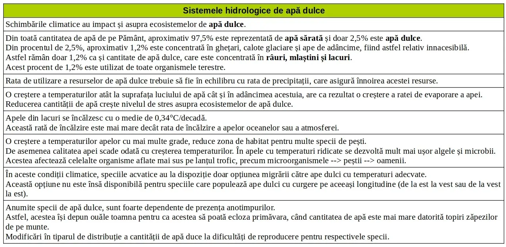

Sistemele hidrologice de apă dulce
Închide meniu
Acasă
Schimbări climatice ∵
Indicatori ai schimbărilor climatice
Vremea severă
Dinamica apei
Sistemele hidrologice de apă dulce
Fauna
Regiunile polare
Adaptări la schimbările climatice
☰
❮
❯
VRU
⟢ Sistemele hidrologice de apă dulce
